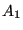
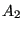
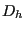
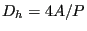
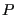

Next: Restrictor, Contraction Up: Fluid Section Types: Gases Previous: Restrictor, Long Orifice Contents
Properties: adiabatic, not isentropic, directional, inlet based restrictor
The geometry of an enlargement is shown in Figure 95. It is described by the following constants (to be specified in that order on the line beneath the *FLUID SECTION, TYPE=RESTRICTOR ENLARGEMENT card):

.
.
of the reduced cross section defined by
where
is the perimeter of the cross section.The loss coefficient for an enlargement is taken from [40].
By specifying the parameter LIQUID on the *FLUID SECTION card the loss is calculated for liquids. In the absence of this parameter, compressible losses are calculated.
Example files: piperestrictor, restrictor, restrictor-oil.